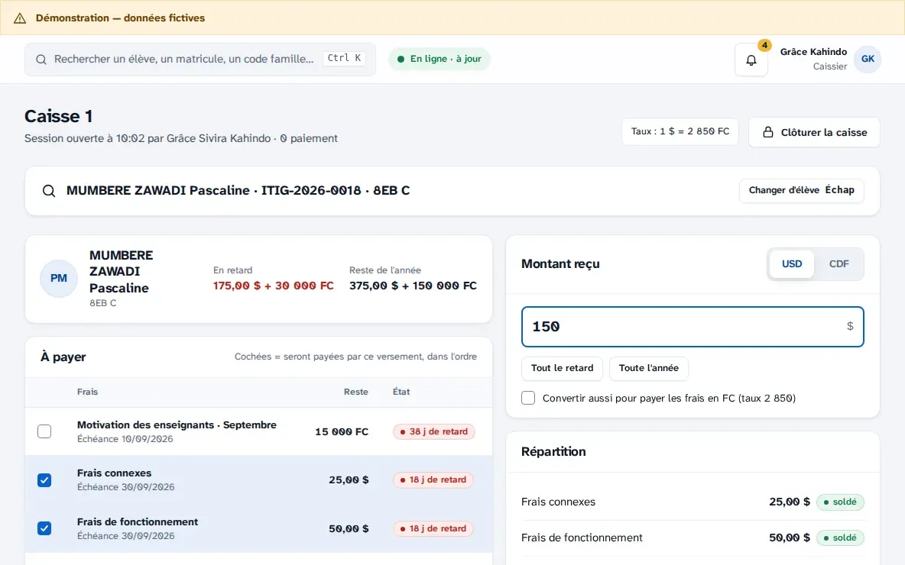
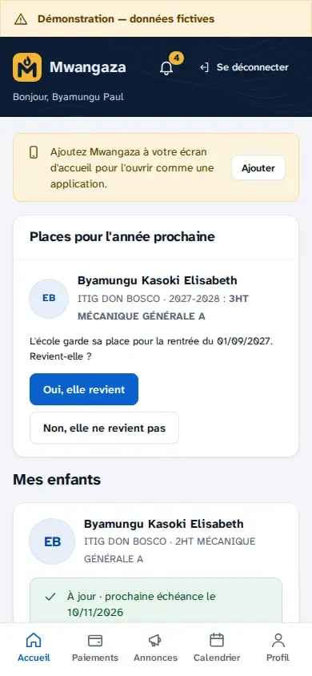
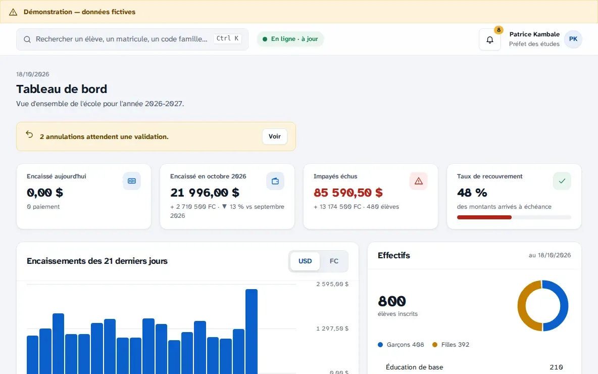
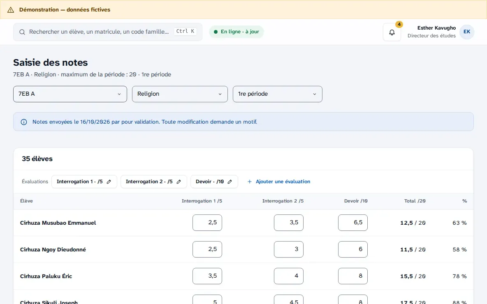
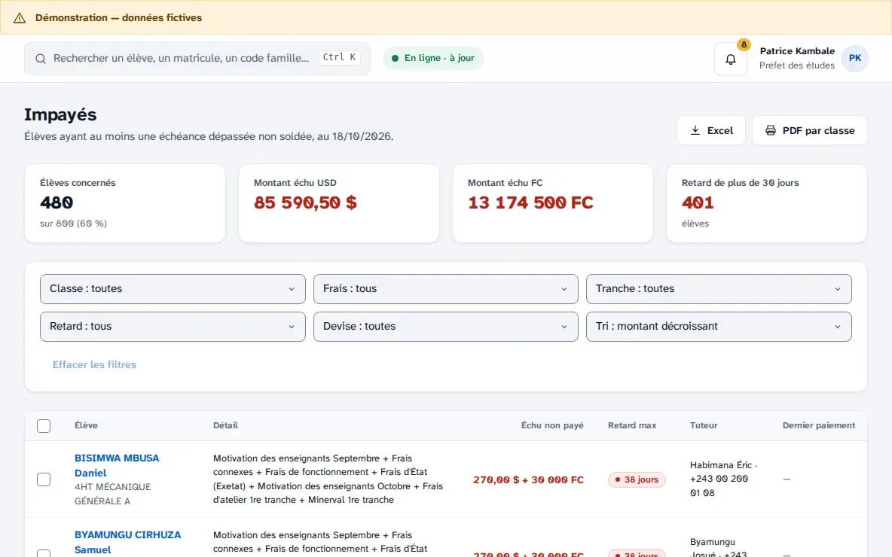
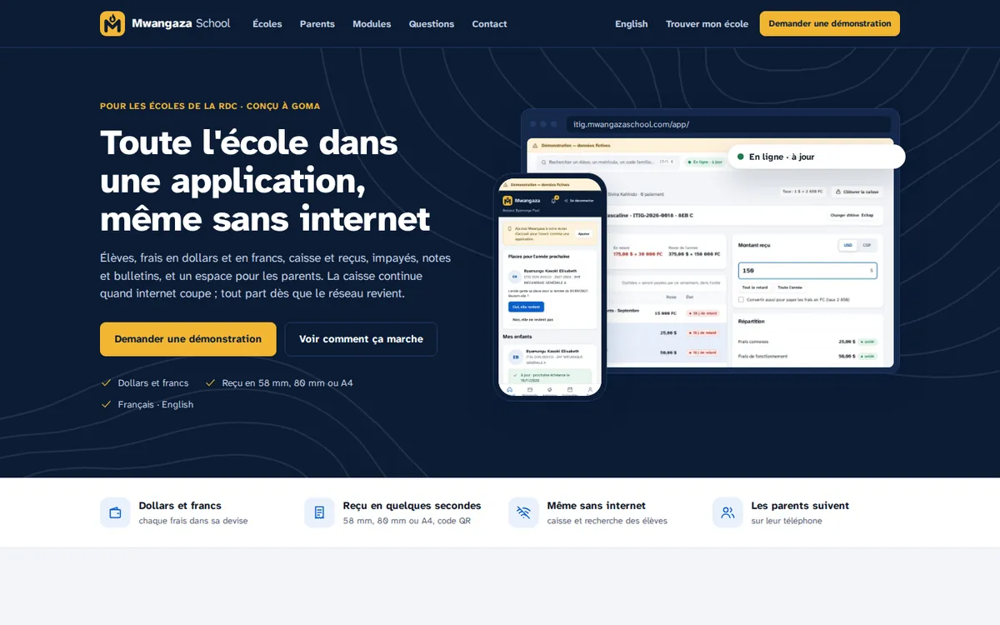

Mwangaza School
School management for the DR Congo, built to keep working without internet.
Students and families, fees in US dollars and Congolese francs, a cash desk that prints receipts, unpaid-fee follow-up, grades, deliberations and report cards, and a portal where parents follow payments on their phone. Designed with a technical school in Goma.
Role · Product, design, engineering and operations
What I did
- Designed every screen as a mockup first, then built the Django API and the React applications for staff and parents.
- Offline-first cash desk: each device numbers its own receipts and every write is idempotent, so nothing is counted twice when the network returns.
- School data isolated twice, by the application and by PostgreSQL Row Level Security, with an audit trail on payments, grades and roles.
- Deployed and monitored in production, with off-site backups and uptime checks.
DjangoPostgreSQLCeleryReactTypeScriptPWADockerAWS



